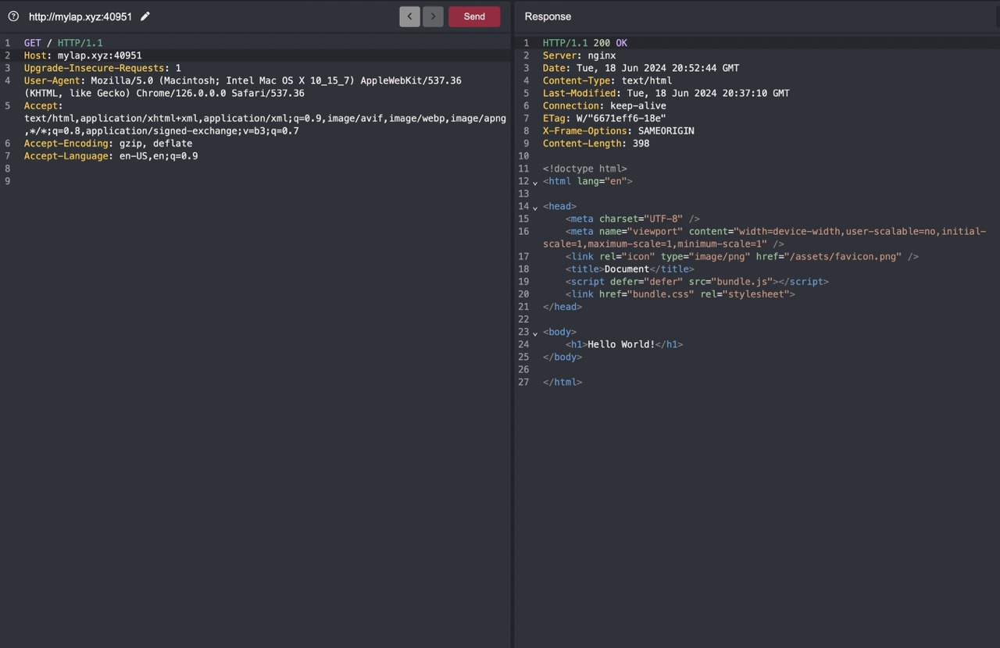

Analyze this test carefully.
Describe anything you can learn from looking at each of these 3 images.
Find the DOM based security vulnerability.
Describe as many security vulnerabilities as you can find in this java code snippet.
public static void makeUserSignUp(String username, String password, Connection connection) throws ... {
try {
Statement statement = connection.createStatement();
String sqlQuery = "INSERT INTO users(username, password) VALUES (" +
"'" + username + "', '" + password + "')";
int resultSet = statement.executeUpdate(sqlQuery);
if (resultSet > 0) {
System.out.println("User signed up successfully!");
} else {
throw new Exception("Failed to sign up user.");
}
} catch (SQLException e) {
// Handle potential database errors...
e.printStackTrace();
}
}
Take a look at this function and try to figure out what the code may do.
use std::iter::zip;
fn main() {
let mut tests: Vec<u8> = Vec::new();
for i in 10..255 {
if i % 2 == 0 {
tests.push(i);
}
}
for s in tests {
if foo(s) {
println!("{s}");
}
}
}
fn foo<T: ToString>(n: T) -> bool {
let ns: String = n.to_string();
let i1 = ns.chars();
let i2 = ns.chars().rev();
let mut result = true;
for (a, b) in zip(i1, i2) {
if a != b {
result = false;
}
}
result
}
Analyze and report your understanding of the security concerns of this situation.
Context: You are a security consultant tasked with evaluating the security posture of "VoteWise," a novel online voting platform designed to modernize elections. VoteWise promises a seamless user experience, encompassing easy registration, secure ballot casting, and immediate access to election results. However, preliminary analysis suggests potential vulnerabilities that must be mitigated before public deployment.
VoteWise aims to provide the following functionalities:
System Architecture:
Frontend: The user interface is built using common web technologies (JavaScript, HTML, CSS) and designed for accessibility across various browsers.
Backend: The core logic of the system is implemented in a distributed Python app utilizing the Flask framework. This component handles critical functions such as user authentication, session management, vote processing, and result tabulation.
Database: Sensitive data, including user information (names, passwords, voting records), candidate details, and election outcomes are stored within a relational database management system like PostgreSQL.
Cache: The system stores some information in a local caching instance system like Redis.
Your Task:
As a security expert, you need to identify potential vulnerabilities across all layers of the VoteWise system.
Think critically about each component of the VoteWise system and identify potential weaknesses that could compromise the integrity, confidentiality, and availability of the voting process.